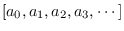
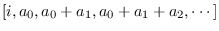
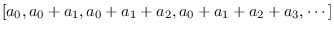

Die Scan-Operator, auch als parallele Präfixsumme bezeichnet, nimmt einen Vektor (Stream) von Datenelementen und eine (willkürliche) assoziative Binärfunktion '+' mit einem Identitätselement 'i' auf.
Wenn die Eingabe
 ist, erzeugt ein exklusiver Scan die Ausgabe
 während ein inklusiver Scan die erzeugt Ausgabe
 und erfordert keine Identität. Während die Operation auf den ersten Blick von Natur aus seriell erscheint, sind effiziente Parallel-Scan-Algorithmen möglich und wurden auf Grafikprozessoren implementiert. Die Scanoperation wird beispielsweise bei der Quicksortierung und der spärlichen Matrixvektormultiplikation verwendet.